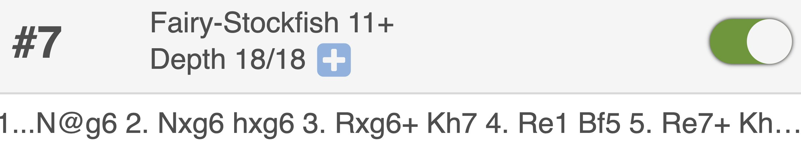
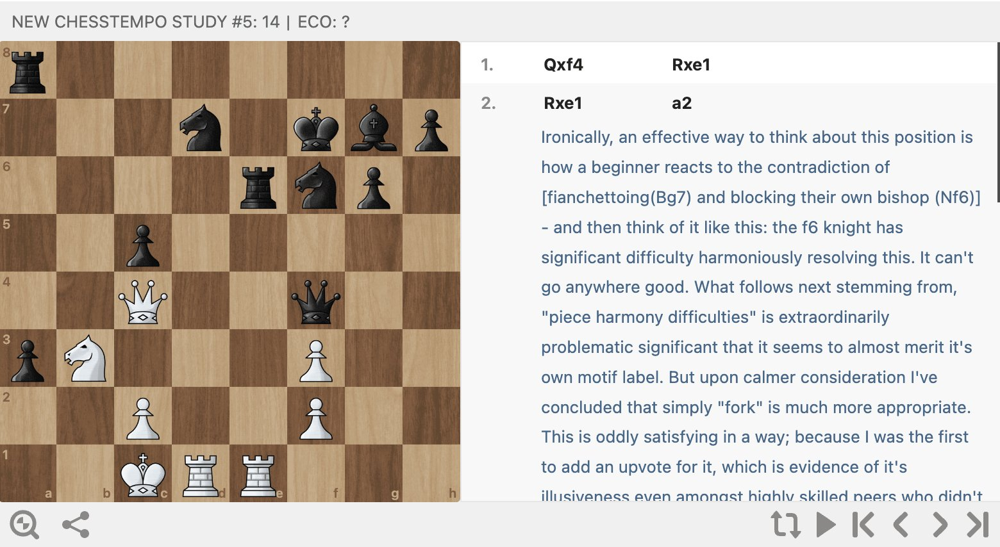
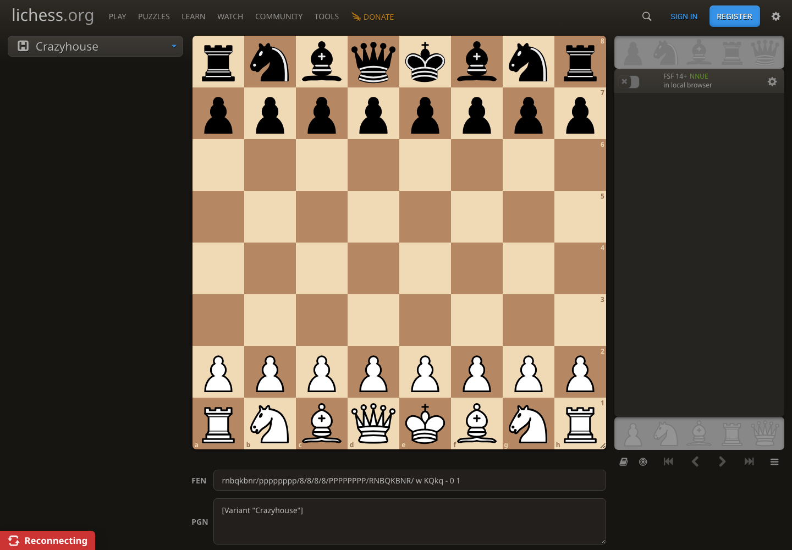
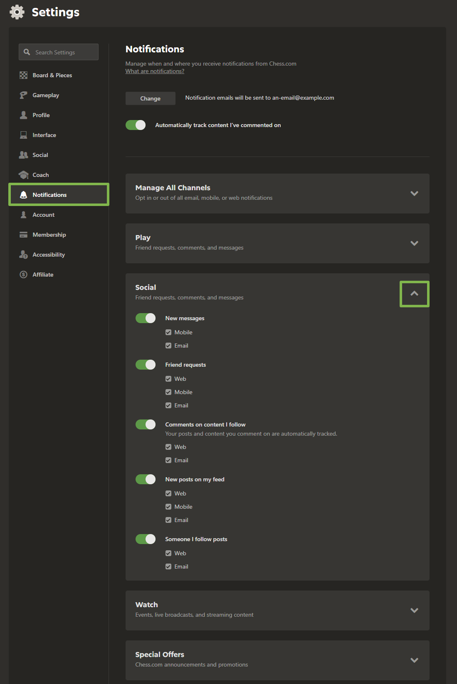
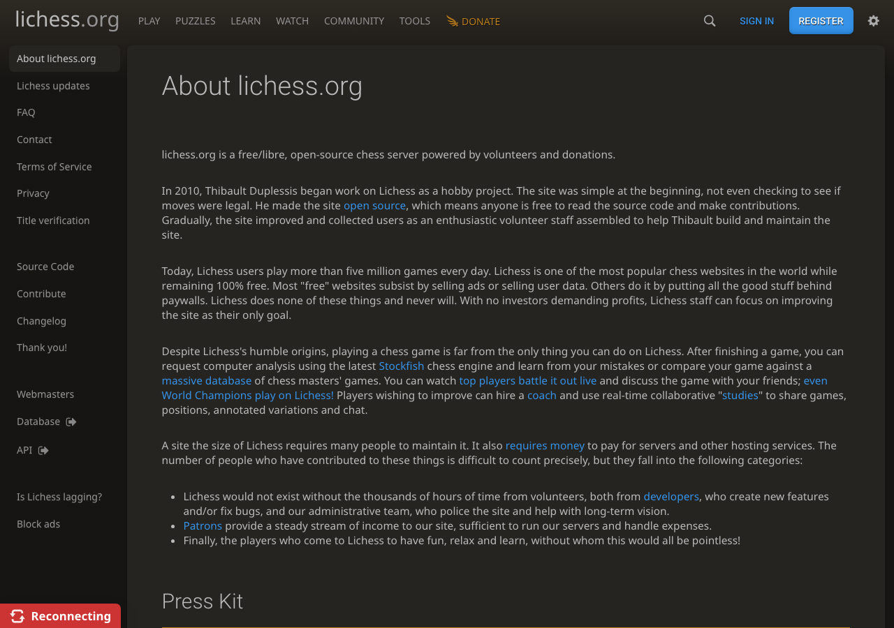
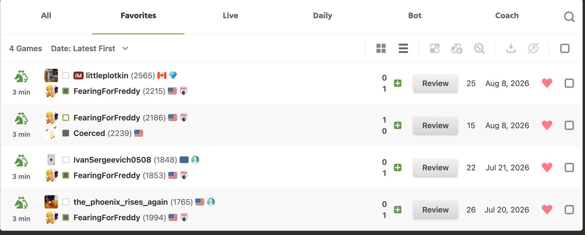
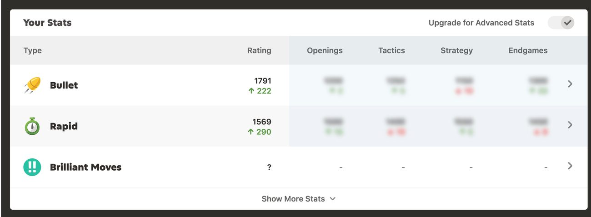
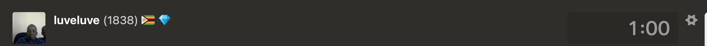
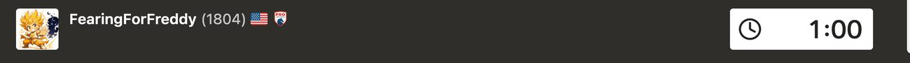
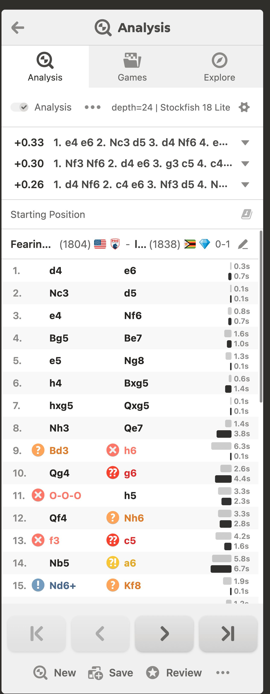

The chess.com patterns we borrow, redrawn in our own skin (dark navy + cyan, per the wireframe). Skeleton imitated, assets not copied. Each block notes its chess.com analog, its zone (RAIL / STAGE / DOCK), and its lock behavior in the capability map.
Filled cells open the cited design reference in a new tab. Empty cells remain visibly reserved so the catalog records its own growth.
Captured third-party UI is retained here only as a build target. These pixels never migrate into app components. Registry: 1–11 canonical · 12–16 Bv2 · 17–21 curated · next specimen is 22.
Ranked line, engine identity, depth, expand affordance, enable toggle, and a variation written in drop notation. Target: the Queue Engine result card in a grouped DOCK stack.

Board, numbered moves, personal prose annotation, replay controls, and share affordance. Target: a saved moment card combining a moment address, position, and the user's own written insight.

UI of interest: a narrow, self-contained analysis column with pocket rails, engine status and controls, a deep content well, and compact bottom navigation. The structural lesson is modular stacking beside a primary board, not Lichess's graphics or skin.

UI of interest: notification categories as collapsible rows, one expanded category, global and per-event toggles, and explicit delivery-channel checkboxes. The reference is for hierarchy and state density only; icons, palette, type, and controls must be redrawn.

UI of interest: a light, sentence-case page H1 with generous separation from body copy, followed by a similarly weighted but smaller H2. Target: a restrained content hierarchy for reference and settings pages, rebuilt with project tokens.

Row anatomy combines variant and time-control cues, stacked opponents and results, a Review action, move count, date, favorite heart, and selection checkbox beneath a filter tab strip. Target: refine canonical block 5 and its flashcard-adjacent bookmark state.

Type icon and label, rating with delta, blurred premium columns, row chevrons, and a Show More disclosure demonstrate dense statistics with visible-but-locked depth. Target: the Statistics STAGE without copying icons, blur treatment, or skin.

The inactive player bar recedes through a dark clock face and reduced contrast while identity and rating remain readable. Pair with block 20 to document turn-state fading for Board A/B player bars.

The active player bar makes the clock the brightest object while preserving the same identity strip. Together blocks 19–20 isolate the fade/brighten-by-turn behavior rather than a one-off visual state.

Tab triplet, engine header, ranked eval lines, game result header, move classifications, per-move time bars, jump controls, and New/Save/Review footer form one vertically ordered dock. Target: the engine-card group and Moves-tab upgrade, rebuilt in project tokens.
